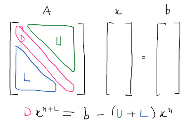

Jacobi method
Introduction
Jacobi method is a standard iterative scheme for solving the linear system $Ax=b$. It is part of what is known as relaxation-based methods, together with Gauss-Seidel.
The basic idea is to write the diagonal product as a function of off-diagonal ones.
Ax=b
Take this simple linear system of equations.
import numpy as np
A = np.array([[3, 1, -1], [1, -4, 2], [-2, -1, 5]])
b = np.array([3, -1, 2])
print("A:", A)
print("b:", b)
print(np.linalg.inv(A) @ b) # solving with numpy inverse functionA: [[ 3 1 -1] [ 1 -4 2] [-2 -1 5]] b: [ 3 -1 2] [1. 1. 1.]
Iterative scheme
The iterative scheme, in a programming language would be as follows:
-
input an initial solution guess
-
loop over rows and columns
-
if not a in the diagonal, perform a row-column multiplication and sum the results
-
solve for the updated solution by inverting the diagonal entry
Iterations Jacobi
x = np.array([0.2, 0.3, 0.4]) # initial guess
x_new = np.zeros(np.shape(x))
rows, columns = np.shape(A)
num_iter = 15
for m in range(num_iter):
for i in range(rows): # loop over rows
sumprod = 0
for j in range(columns):
if i is not j:
sumprod += A[i, j] * x[j] # non diagonal
x_new[i] = (b[i] - sumprod) / A[i, i]
x = x_new
print(f"iteration {m + 1}: {x}")iteration 1: [1.03333333 0.5 0.54 ] iteration 2: [1.01333333 0.77333333 0.96 ] iteration 3: [1.06222222 0.99555556 1.024 ] iteration 4: [1.00948148 1.01437037 1.00666667] iteration 5: [0.9974321 1.00269136 0.99951111] iteration 6: [0.99893992 0.99949053 0.99947407] iteration 7: [0.99999451 0.99973567 0.99994494] iteration 8: [1.00006976 0.99998991 1.00002588] iteration 9: [1.00001199 1.00001594 1.00000798] iteration 10: [0.99999735 1.00000333 0.99999961] iteration 11: [0.99999876 0.99999949 0.9999994 ] iteration 12: [0.99999997 0.99999969 0.99999993] iteration 13: [1.00000008 0.99999998 1.00000003] iteration 14: [1.00000001 1.00000002 1.00000001] iteration 15: [1. 1. 1.]
Exact solution at 15th iteration.
Iterations Gauss Seidel
What if we use the updated solution on the other rows instead of waiting the whole system to be solved (i-loop).
x = np.array([0.2, 0.3, 0.4]) # initial guess
rows, columns = np.shape(A)
num_iter = 15
for m in range(num_iter):
for i in range(rows): # loop over rows
sumprod = 0
for j in range(columns):
if i is not j:
sumprod += A[i, j] * x[j] # non diagonal
x[i] = (b[i] - sumprod) / A[i, i]
print(f"iteration {m + 1}: {x}")iteration 1: [1.03333333 0.70833333 0.955 ] iteration 2: [1.08222222 0.99805556 1.0325 ] iteration 3: [1.01148148 1.01912037 1.00841667] iteration 4: [0.9964321 1.00331636 0.99923611] iteration 5: [0.99863992 0.99927803 0.99931157] iteration 6: [1.00001118 0.99965858 0.99993619] iteration 7: [1.00009254 0.99999123 1.00003526] iteration 8: [1.00001468 1.0000213 1.00001013] iteration 9: [0.99999628 1.00000413 0.99999934] iteration 10: [0.9999984 0.99999927 0.99999921] iteration 11: [0.99999998 0.9999996 0.99999991] iteration 12: [1.0000001 0.99999998 1.00000004] iteration 13: [1.00000002 1.00000002 1.00000001] iteration 14: [1. 1.00000001 1. ] iteration 15: [1. 1. 1.]
Slight difference, exact solution at 14th iteration. From computational point of view, it does not requires to store simultaneously the previous iteration and the new one.
References
-
Saad, Y., & van der Vorst, H. A. (). Iterative solution of linear systems in the 20th century. , 123(1-2), 1–33. http://dx.doi.org/10.1016/S0377-0427(00)00412-X